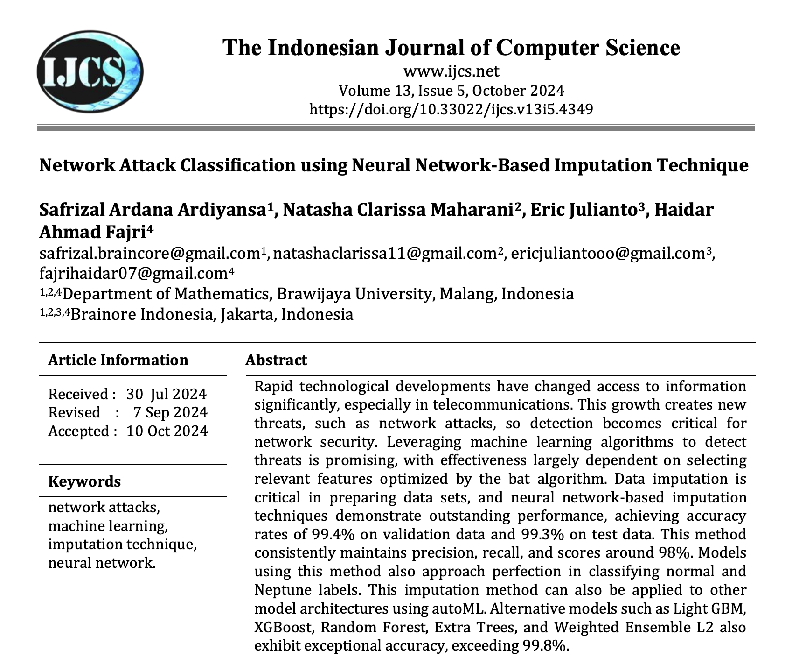
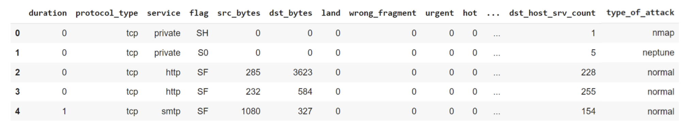

Deteksi Serangan Siber Berbasis AI
Optimasi Hyperparameter Random Forest & XGBoost Menggunakan Algoritma Genetika
Tujuan Penelitian
- Tujuan Utama: Mengoptimalkan Hyperparameter Random Forest (RF) dan XGBoost (XGB) menggunakan Algoritma Genetika (GA).
- Komparasi: Mengevaluasi peningkatan performa dibandingkan dengan Baseline (Parameter Default).
- Fokus: Meningkatkan kemampuan deteksi pada kelas serangan minoritas (menggunakan skor F1-Macro).
Metodologi: Data & Fitur
Penanganan Data
- Dataset: NSL-KDD (Keamanan Informasi) (Tavallaee et al. 2009).
- Seleksi Fitur: Menggunakan set tetap 25 Fitur (berdasarkan Bat Algorithm / Paper IJCS (Ardiyansa et al. 2024)).
- Preprocessing:
- Filter label tidak dikenal (
-1) untuk pengujian yang adil. - Optimasi kelas langka dilakukan secara spesifik saat Cross-Validation untuk menjamin stabilitas.
- Filter label tidak dikenal (
Metodologi: Algoritma
Model Baseline
- Random Forest & XGBoost standar dengan pengaturan default library.
- Berfungsi sebagai tolak ukur (benchmark) performa.
Model Teroptimasi (GA)
- Populasi: 10-20 individu.
- Generasi: 15 generasi.
- Fungsi Fitness: 3-Fold CV F1-Macro.
- Target: Memaksimalkan rata-rata harmonik presisi dan recall di seluruh kelas, memprioritaskan kelas minoritas.
Penelitian Terdahulu

Judul Paper: Network Attack Classification using Neural Network-Based Imputation Technique
Publikasi: Indonesian Journal of Computer Science (IJCS), Vol 13, Issue 5, Oct 2024.
Kontribusi Utama:
- Menggunakan Teknik Imputasi berbasis Neural Network.
- Penerapan Bat Algorithm untuk seleksi fitur menghasilkan 25 fitur optimal.
Note
Relevansi: Riset saat ini menggunakan 25 fitur yang sama hasil seleksi Bat Algorithm tersebut, untuk berfokus penuh pada Optimasi Hyperparameter.
Tinjauan Literatur Modern
Riset terkini (2020-2025) menunjukkan tren kuat dalam penggunaan Algoritma Bio-Inspired untuk optimasi IDS.
1. Optimasi Ensemble Stack dengan GA > Mengusulkan OSEN-IoT, menggunakan Genetic Algorithm untuk mengoptimalkan meta-learner pada stacked model. Hasilnya menunjukkan generalisasi tinggi pada dataset heterogen (Asif 2025).
2. Butterfly Optimization untuk Anomaly Detection > Menggunakan optimasi bio-inspired untuk seleksi fitur yang mengurangi dimensi data namun meningkatkan akurasi deteksi anomali (Mahboob and Moghaddam 2020).
Tip
Posisi Penelitian Ini: Menggabungkan kekuatan XGBoost (sebagai classifier robust) dengan Genetic Algorithm (sebagai optimizer hyperparameter) untuk menyeimbangkan presisi pada kelas mayoritas dan recall pada kelas minoritas.
Tampilan Dataset

Cuplikan struktur data NSL-KDD yang digunakan dalam penelitian
Hasil Optimasi (Training)
Algoritma Genetika berhasil menemukan set parameter dengan performa teoritis (Cross-Validation) yang jauh lebih tinggi.
| Model | Baseline CV F1-Macro | GA Optimized CV F1-Macro | Peningkatan |
|---|---|---|---|
| Random Forest | 0.7710 | 0.9864 | +27.9% |
| XGBoost | 0.7594 | 0.9877 | +30.0% |
Insight
Fase optimasi terbukti sangat efektif dalam menemukan parameter yang dapat menjelaskan struktur data latih dengan lebih baik.
Hasil Pengujian Akhir
Performa pada Test Set terpisah (Hanya Kelas yang Diketahui).
| Model | Akurasi | Skor F1-Macro | Waktu Training (s) |
|---|---|---|---|
| RF Baseline | 0.9623 | 0.73 | 5.7s |
| RF GA | 0.9623 | 0.74 | 352.4s |
| XGB Baseline | 0.9625 | 0.69 | 6.5s |
| XGB GA | 0.9626 | 0.73 | 423.2s |
Temuan Kunci
Optimasi GA meningkatkan kemampuan XGBoost dalam mendeteksi serangan langka (F1-Macro naik dari 0.69 ke 0.73), menyamai performa terbaik RF.
Confusion Matrix: Random Forest
Baseline (RF Normal) 
Teroptimasi (RF GA) 
Confusion Matrix: XGBoost
Baseline (XGB Normal) 
Teroptimasi (XGB GA) 
Analisis Fitur Penting


Analisis SHAP (XGBoost GA)
Memahami fitur apa yang paling berkontribusi terhadap output prediksi model secara keseluruhan.

Kesimpulan & Rekomendasi
Validitas GA Penggunaan Algoritma Genetika untuk tuning hyperparameter terbukti sangat efektif dalam meningkatkan kecocokan model (skor CV > 0.98).
Generalisasi
- XGBoost mendapatkan manfaat terbesar dari tuning, menunjukkan peningkatan generalisasi yang jelas (F1-Macro +0.04).
- Random Forest secara default sudah robust; tuning yang agresif terkadang justru menyebabkan sedikit overfitting pada data validasi.
Rekomendasi Untuk dataset ini, Optimized XGBoost adalah model yang direkomendasikan karena menyeimbangkan akurasi tinggi (0.9626) dengan deteksi kelas minoritas yang kuat (F1 0.73).
Referensi
Tanya Jawab
Terima Kasih!

Proyek Artificial Intelligence - Optimasi GA